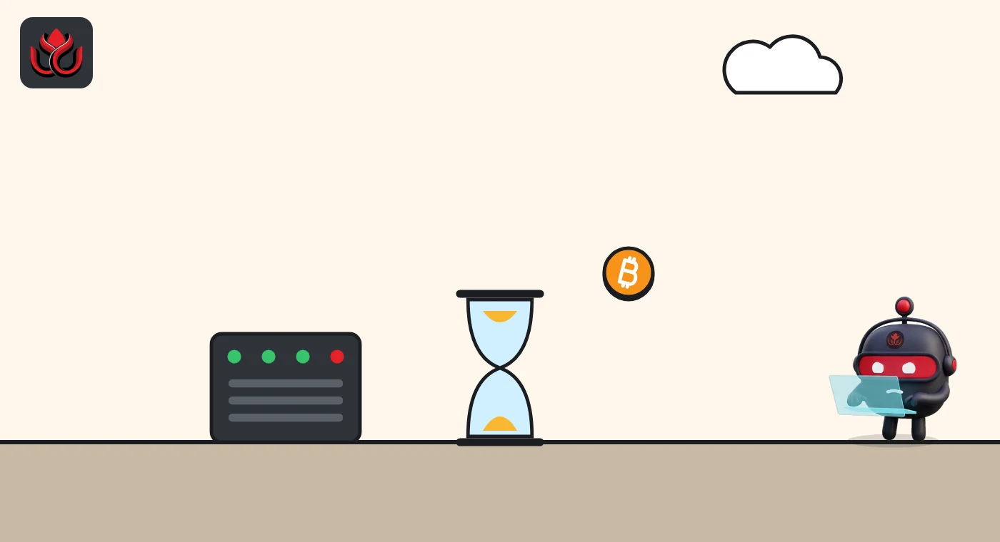

Bitcoin fell 5% in four hours. Fees peaked at just 12 sats after a 67-minute wait
mempool.space data shows the November 5 sell-off barely stressed the Bitcoin network. The biggest fee jumps came when blocks were slow, not when panic peaked.
Key points
- Median Bitcoin fees sat at 0 to 2 satoshis per virtual byte before the drop and rose to 3 to 7 during it, mempool.space shows.
- The peak, a median of 12 sat/vB in block 974,689 at 1:39 p.m. ET, came after 67 minutes with no new block.
- Fees were 0.83% of what miners earned over the last 144 blocks counted; the rest was the fixed block reward.
What happened to the price
CoinGecko shows bitcoin at about $80,330 at 7 a.m. ET on November 5 and about $75,960 by 11 a.m. ET, a drop of more than 5%. It traded at $75,535 at 12:38 a.m. ET on November 6.
In a sharp sell-off, many people rush to move coins, for example to an exchange to sell. That can fill the mempool (the waiting room for unconfirmed transactions) and push fees up.
What fees did
Fees are priced in satoshis per virtual byte (sat/vB); a satoshi is one hundred-millionth of a bitcoin. mempool.space's block data shows median fees of 0 to 2 sat/vB through the early hours of November 5. During the drop, from 9:54 a.m. to 12:32 p.m. ET, medians ran between 3 and 7.
The two biggest jumps both followed slow blocks. Block 974,677 at 9:54 a.m. ET came 78 minutes after the one before and had a median of 7. Block 974,689, mined by AntPool at 1:39 p.m. ET, arrived 67 minutes after the previous block and had the day's peak median of 12 sat/vB. It held 3,767 transactions and paid 0.149 BTC in fees in total (block data). By our math, a simple payment at 12 sat/vB cost about $1.30.
Median fee per block, November 5 (ET)
sat/vB
Source: mempool.space block fee rates API, read November 6, 2026, 12:45 a.m. ET

What it means for miners
Over the 144 blocks from 974,559 to 974,702, about one day, miners earned 453.76 BTC, and only 3.76 BTC of that was fees (mempool.space). At 12:45 a.m. ET on November 6, mempool.space's fee estimate for fast confirmation was 4 sat/vB.
LC Insight analysis
This section is our reading of the facts above, not a statement of fact.
- We think the calm fee market suggests most of the selling ran through exchanges and derivatives, which settle off the Bitcoin chain. The fee data alone cannot prove that.
- The fee spikes lined up with random slow blocks more than with the price drop, a reminder that block timing alone can move fees.
- With fees under 1% of miner income, a lower bitcoin price cuts miners' dollar revenue almost one for one.
What's next
- Whether fees stay near 4 sat/vB
- Miner selling if the price stays near $76,000
- The next difficulty adjustment
Disclaimer. This article is based on public information and the sources listed below as of the update time shown. It is for information only and is not investment, legal or tax advice. Figures may change as companies and authorities publish new data.
Sources
- mempool.space, block fee rates API, past week (read November 6, 2026, 12:45 a.m. ET)
- mempool.space, block 974,689 data API
- mempool.space, reward stats for the last 144 blocks API
- mempool.space, recommended fees API (November 6, 2026, 12:45 a.m. ET)
- CoinGecko, Bitcoin (BTC) price (November 6, 2026, 12:38 a.m. ET)